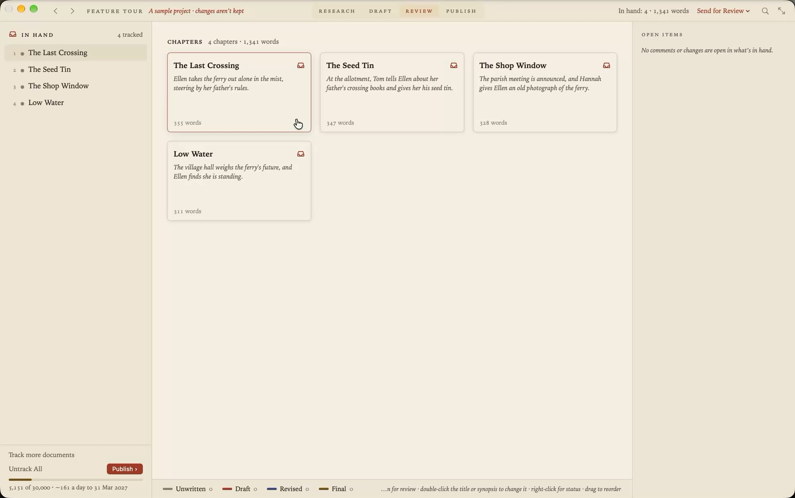

A Scrivener alternative in plain Markdown
Scrivener has been the writer’s workshop for a long time, and for many books it’s still the right one. Grasmere is a different kind of app for the same job. Your book is a folder of plain Markdown files, your sources and citations live with it, and your editor’s tracked changes come back from Word into your draft.

Where Scrivener is the better choice
It’s worth being straight about this.
- Scrivener runs on Windows and iOS as well as the Mac. Grasmere is for the Mac only, and needs macOS 26 or later.
- Compile gives you fine control of the output, and makes ebooks. Grasmere publishes PDF, Word and a website, with a few options each.
- Collections, saved searches, the outliner’s columns and custom metadata have no equal in Grasmere.
- It’s rich text. If you want to set fonts and colours as you write, Markdown won’t suit you.
Where Grasmere differs
Plain files
A Scrivener project is a package that Scrivener reads. A Grasmere project is a folder of .md files, a chapter each, that any editor reads. You can open a chapter on another computer, keep the book in git, or stop using Grasmere altogether and lose nothing.
Review in Word, without leaving your draft
Send a chapter or the whole book to your editor as a Word file. When it comes back, each tracked change and comment appears beside your text, in its own chapter, to accept or reject one at a time. It works even if you kept writing while they read. See Markdown to Word, and back again.
Sources and citations
For non-fiction, the research folder holds more than files. A saved web page, a paper’s PDF or a book added by its ISBN is a source you can cite by typing [@. A Zotero library can be imported. When you publish, citations and the reference list are written in APA, Harvard, Chicago or MLA.
One small payment
Grasmere is free for 14 days, then $14.99 once.
What you’ll recognise
| In Scrivener | In Grasmere |
|---|---|
| The binder | The contents, in an order you drag. Folders are real folders. |
| The corkboard and synopses | The Review stage’s cards, each with its title, synopsis, word count and status. |
| Status | Unwritten, Draft, Revised or Final, kept as a line at the top of the chapter. |
| Compile | The Publish stage. Standard manuscript format or a book layout, as PDF or Word. |
| Snapshots | Versions. Restore points, review rounds and git commits, compared word by word. |
| The Research folder | The research folder, where each item can be a source to cite. |
| Targets | Word targets for the project or a folder, with a deadline. |
| Comments | Comments beside the text, which go out as real Word comments. |
| Composition mode | Focus mode. |
Bring your book across
New in 1.5. File ▸ Import Scrivener Project makes a Grasmere project from a .scriv. Before anything is made, a sheet says what will come across, what’s kept to one side and what’s left behind, with counts for your book.
Your folders and documents come across in the binder’s order, as Markdown. So do synopses, statuses, labels and keywords, footnotes, comments and inline annotations, pictures, and the Research folder’s files. Snapshots and document notes are kept as documents of their own.
Fonts, colours and alignment are left behind, along with collections, compile formats and a table’s grid. The Scrivener project isn’t changed, and the two aren’t joined afterwards.
You can import before starting the free trial, to see your book in Grasmere first. The details are in the Import from Scrivener guide.
Questions
Which Scrivener projects can be imported?
Those saved by Scrivener 3, on the Mac, Windows or iOS. Open an older project once in Scrivener 3 first.
Is Grasmere for novels or non-fiction?
Both, though its research and citation tools mean non-fiction and academic writers get the most from it. A novelist gets chapters as cards, manuscript format and the review round trip.
Can I go back?
Your Scrivener project is untouched, so it’s still there. And what you write in Grasmere is plain Markdown, which you can take anywhere.
See your book in Markdown.
Import a Scrivener project, or start in an empty folder. The trial is free for 14 days.
Download for macOS Free for 14 days, then $14.99 once · macOS 26+